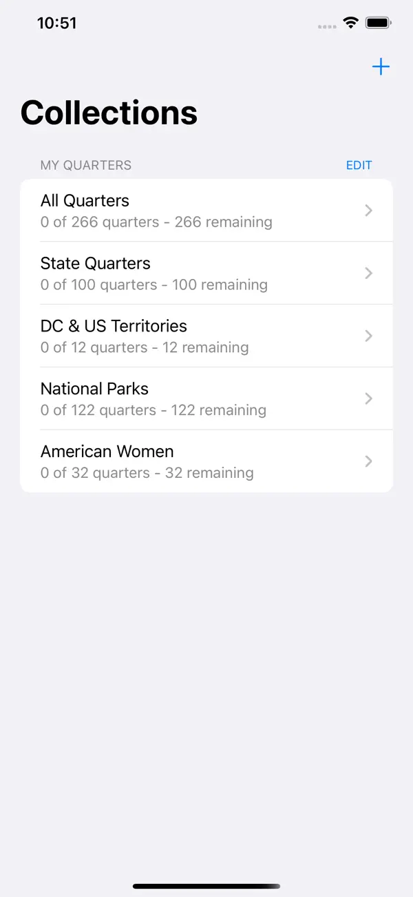
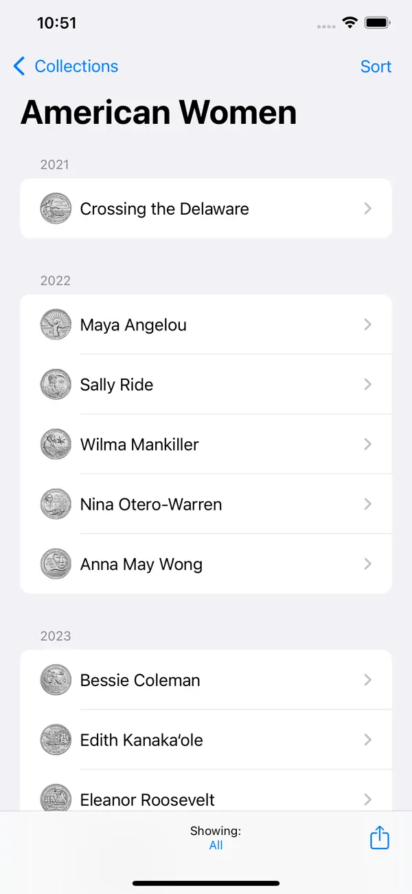
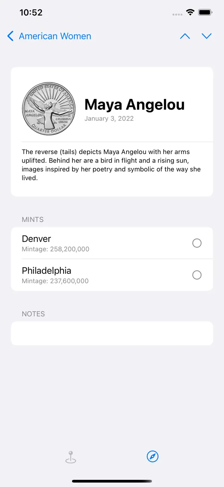
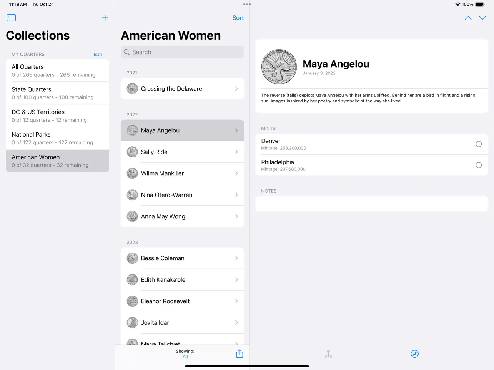

Sigue las marcas de ceca
Sigue el progreso de Denver y Filadelfia por separado para que el estado de tu colección sea preciso.
Para iPhone e iPad
Mantén un seguimiento de tu colección de monedas de 25 centavos de EE.UU. con marcas de ceca, notas, imágenes, detalles de lanzamiento y progreso en todos los programas de monedas de 25 centavos compatibles.



QuarterMinder mantiene la lista práctica: lo que tienes, lo que aún necesitas y los detalles que hacen que cada moneda sea más fácil de identificar.
Sigue el progreso de Denver y Filadelfia por separado para que el estado de tu colección sea preciso.
Crea colecciones separadas para diferentes álbumes, miembros de la familia, carpetas u objetivos de colección.
Usa imágenes grandes de monedas, información de lanzamiento, enlaces a mapas y enlaces de la Casa de Moneda de EE.UU. mientras coleccionas.
Añade notas a monedas individuales sobre condición, origen, ubicación en el álbum o cualquier otro detalle digno de recuerdo.
Exporta la información de la colección a Mensajes, Correo, Notas y aplicaciones de redes sociales instaladas.
La compatibilidad con Tipo Dinámico ayuda a que QuarterMinder sea legible con tu tamaño de texto preferido.
QuarterMinder se actualiza para la serie moderna de monedas de 25 centavos de EE.UU., incluyendo nuevos programas más allá de las Monedas de los 50 Estados.
Ve el progreso de la colección de un vistazo, luego abre cada moneda para imágenes más grandes y más detalles.
Colecciones
Las colecciones separadas facilitan el seguimiento de álbumes, carpetas, colecciones familiares u objetivos de colección diferentes sin mezclar todo junto.
Programas
Examina los programas de monedas de 25 centavos de EE.UU. compatibles, sigue el progreso de las cecas y mantén la lista enfocada en las monedas que realmente coleccionas.
Detalles
Cada moneda de 25 centavos puede incluir arte más grande, detalles de lanzamiento, seguimiento de ceca, notas y enlaces para una referencia más profunda.
iPad
En iPad, los detalles de la moneda tienen espacio para imágenes, información de lanzamiento, notas y enlaces de referencia sin sentirse abarrotado.
